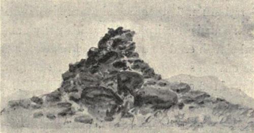
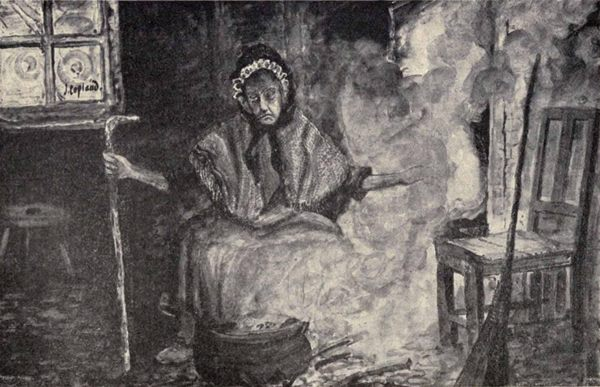

“He thrave for a while,
And a prettier bairn was’na seen in a mile;
Lang ere Beltane, however, he was sairly backgane
And shilped to naething but mere skin and bane.
The mither grieved sair—thought her Sandy wad die—
Folk a’ said he had got a blink o’ an ill e’e,
And the health o’ the baby wad bravely in time turn
If he had the blessing o’ auld Luckie Lymeburn.
Now the mither min’d weel, that on ae Friday morn
Auld Luckie gaed past, but nae word did she say,
And the bairn had soon after begun to decay.
Ane an’ a’ then agreed that the child wadna mend, or
Do one mair guid till auld Luckie they’d send for;
Luckie Lymeburn is sent for, and soon there appears
A haggart wee grannnum sair bent down in years,
Whase e’en, wild demeanour, every appearance was sic,
That you’d easily hae guess’d that she dealt wi’ Auld Nick.
Auld Luckie had lang kept the country in dread—
Nae bairn was unweil, nor beast suddenly dead,
Nae time had the horses stood up in the plough,
Nor when drying the malt had the kiln tain alow,
Nae roof o’ a byre fa’en down in the night,
Nor storm at the fishing, the boatmen affright,
But ’twas aye Luckie Lymeburn that bare a’ the blame o’t,
While Luckie took pride and rejoiced at the name o’t.
Thro’ dread that her glamour might harm o’ their gear,
O’ ought in the house they aye ga’e her a share,
And ilk dame through the land was in terror o’ Luckie,
From the point of Kirkcolm to her ain Carrick-mickie.
Ere Sandy is mentioned the mither takes care
To sooth the auld dame and to speak her right fair;
Anon, then, she tells how her boy’s lang been ill,
And a’ the folk say she’s a hantle o’ skill—
Begs she’ll look at the bairn and see what’s the matter,
And when neist at the mill she winna forget her.
Auld Granny saw well thro’ the mither’s contrivance,
So she looks on the bairn and wishes him thrivance—
Says he’ll soon come about and be healthy and gay,
If dipt at the Co’[1] the first Sunday o’ May.
The boy’s health came round, as auld Luckie had said,
But ere Sandy came round Luckie Lymeburn was dead.
The laws against witches were now very stric’,
And Luckie’s accused that she dealt wi’ Auld Nick—
That lately a storm she had raised on the coast,
In which many braw fishing boats had been lost;
Last winter that she and her conjuring ban’
Had smoor’d a’ the sheep on the fells o’ Dunman
But chief, that in concert wi’ Luckie Agnew,
She had sunk, off the Mull, a fine ship with her crew.
The ship had been bound for Hibernia’s main,
And smoothly was gliding o’er the watery plain
With the wind in her rear, when a furious blast,
While off the Mull head, sudden rose from the west,
And lays to the breeze the gallant ship’s side,
And round and round whirls her in th’ eddy o’ th’ tide.
Meantime the old hags, on the hill, are in view,
And boiling their caldron, or winding their clue,
New charms still they try, but they try them in vain:
The seamen still strove, nor their purpose could gain,
The waves are still threat’ning the ship to o’erwhelm;
The crew, one by one, have relinquished the helm.
Long, long the crew labour’d the vessel to stay,
Nor rudder nor sail would the vessel obey,
When forth steps a tar, a regardless old sinner,
And swore he’d her steer though the devil were in her;
When instant the weird-woman’s spells take effect,
She sinks ’mang the rocks, and soon’s floating a wreck—
For these, and some deeds of a similar kind
Were Luckies Agnew and Lymeburn arraigned.
Their trial comes on—full confession they make—
In the auld burgh o’ Wigton they’re burnt at the stake.”
The metamorphosis to brute-form on the part of the witch or warlock is one of the most persistent traditions concerning witchcraft. In the south-west country the favourite animal-form selected was that of the hare, very probably on account of its fleetness of foot. Of this the following are examples:—
“A young man from Kirkmaiden found work at a distance, and as means of travel were not so convenient as now, it was a number of years before he found opportunity to visit his native parish. At the end of some years he returned, however, about New-Year time, and taking down a gun that was in his mother’s house, remarked that he would go out to the Inshanks Moor and see if he could get a hare for the dinner on New-Year’s Day. His mother told him to be careful he was not caught poaching. He had not been long in the moor when a hare got up, at which he shot repeatedly, but apparently without effect. At last he came to the conclusion that the hare was one of the numerous Kirkmaiden witches, and thought he would try the effect of silver. The hare had observed him, and at once inquired if he would shoot his own mother? Much startled, he desisted and went home, took to his bed, and did not rise for five years, though he could take his food well enough, and apparently was in good enough health. He had no power to rise until his mother died, when his strength being most wonderfully restored, he left his bed, dressed himself and attended the funeral.”(9)
Another reputed witch lived near the Church of Kirkmaiden, and it is told by a woman of the neighbourhood how her grandmother lived beside her, and having occasion to go to the well in the gloaming one evening something gave a sound, not unlike the noise one makes when clapping mud with a spade, and immediately a hare hopped past her on the road, and went over the dyke into the garden. When she went round the end of the house her neighbour was climbing over the dyke, and the old woman firmly believed it was the witch she saw the moment before in the form of a hare, which had returned to human shape just before she saw her again.
In connection with the phenomenon of transformation to brute-form an interesting point must be accentuated, and that is that an animal bewitched or about to be sacrificed by witchcraft was believed by some subtle power to gain and absorb to itself some considerable part of the spirit or entity of the witch or warlock working the spell, which not uncommonly led to detection of the spell-worker. An example of this may also be quoted:—
“A farmer of Galloway, coming to a new farm with a fine and healthy stock, saw them die away one by one at stall and at stake. His last one was lying sprawling almost in death, when a fellow-farmer got him to consider his stock as bewitched and attempt its relief accordingly. He placed a pile of dried wood round his cow, setting it on fire. The flame began to catch hold of the victim, and its outer parts to consume, when a man, reputed to be a warlock, came flying over the fields, yelling horribly and loudly, conjuring the farmer to slake the fire. ‘Kep skaith wha brings’t,’ exclaimed the farmer, heaping on more fuel. He tore his clothes in distraction, for his body was beginning to fry with the burning of his spirit. The farmer, unwilling to drive even the devil to despair, made him swear peace to all that was or should be his, and then unloosed his imprisoned spirit by quenching the fire.”(10)
The counterpart of magical migration through the air has also its examples, for within the memory of people still living there was an old woman lived at Logan Mill, who whenever she had a mind to travel, got astride of the nearest dyke, and was at once conveyed to wherever she wished. At least it was said so.
Another reputed witch who dwelt in the neighbourhood of Port Logan was much troubled with shortness of breath, and was easily tired. When she found herself in this condition of exhaustion away from her home she was credited with entering the nearest field where horses and cattle were grazing, and mounting one, to “ride post” straight for home.
The following elegy, which has been preserved in the collection of poems known as the Nithsdale Minstrel, fully illustrates the dread in which the Kirkmaiden witches were held, and more particularly the relief experienced when death removed the baneful influence of “Meg Elson,” a witch of much repute:—
Meg Elson’s Elegy.
“Kirkmaiden dames may crously craw
And cock their nose fu’ canty,
For Maggy Elson’s now awa’,
That lately bragged sae vaunty
That she could kill each cow an’ ca’,
An’ make their milk fu’ scanty—
Since Death’s gi’en Maggy’s neck a thraw,
They’ll a’ hae butter plenty,
In lumps each day.
Ye fishermen, a’ roun’ the shore,
Huzza wi’ might and mettle,
Nae mair ye’ll furnish frae your store
A cod for Maggy’s kettle—
Nae mair ye’ll fear the clouds that lour,
Nor storms that roun’ you rattle,
Lest, conjured up by cantrip power,
They coup you wi’ a brattle
I’ the sea some day.
Ye ewes that bleat the knowes out o’er,
Ye kye that roam the valley,
Nae dread of Maggy’s magic glower
Need henceforth mair assail ye:
Nae horse nor mare, by Circean power,
Shall now turn up its belly,
For Death has lock’d Meg’s prison door,
And gi’en the keys to Kelly
To keep this day.”
Passing to the Machars of Galloway, a curious witch-story comes from Whithorn corresponding to and somewhat similar in trend to the first acts in the dramatic happenings of “Tam o’ Shanter,” and the story already told of Dalry Kirk:—
“Long ago there lived in Whithorn a tailor who was an elder of the Church, and who used to ‘whip the cat,’ that is, go to the country to ply his trade. Being once engaged at a farm-house, the farmer told him to bring his wife with him and spend an afternoon at the farm. The invitation was accepted, and on returning at night, the attention of the knight of the needle and his better-half was attracted to an old kiln, situated at the low end of the ‘Rotten Row,’ from which rays of light were emanating. This surprised the worthy couple, all the more as the old kiln had for long been in a state of disuse. Their curiosity being thus awakened, they approached to look through the chinks of the door, when to their astonishment they beheld a sight somewhat similar to that seen by ‘Tam o’ Shanter’ at ‘Alloway’s Auld Haunted Kirk.’ Among the dramatis personæ who should they recognise but the minister’s wife, whom they both knew well. She, along with a bevy of withered hags, was engaged in cantrips, being distinguished by a peculiar kind of garter which she wore. Next Sabbath the tailor elder demanded a meeting of the Kirk-Session; but the minister declared that the story was a monstrosity, as his wife had not been out of bed that night. Not being easily repressed, however, the tailor requested that the minister’s wife should be brought then and there before the Session. When she appeared it was found that she had on the identical garters she had worn on the night when she was seen by the triumphant tailor. This startling and overwhelming corroboration of the truth of the ‘fama’ quite nonplussed the minister, and as the story has it, before the next Sunday he and his lady were ‘owre the Borders an’ awa’.’”(11)
A Dalry story may now be quoted which is specially concerned with the actual evil workings of his Satanic Majesty himself:—
“The Rev. Mr Boyd, who was appointed minister of Dalry in 1690, after his return from Holland, whither he had fled during the persecution, and who died in 1741 in his 83rd year, had a daughter to whom the devil took a fancy. He once came to the manse in the form of a bumble-bee, but was driven away by a chance pious exclamation. Another time he arrived in the form of a handsome young gentleman, fascinated the damsel, induced her to play cards with him on a Sunday, and bore her off on a black horse. Fortunately the minister saw the occurrence, and also a cloven hoof hanging at the stirrup, and shouted to his daughter to come back for Christ’s sake, and the devil let her drop to the ground nothing the worse.”(12)
In connection with the parish of Kells it may be noted that a member of the old baronial family of Shaws of Craigenbay and Craigend, Sir Chesney Shaw, is reputed to have been strangled by a witch in the guise of a black cat. The deed took place in the Tower of Craigend.

The Carlin’s Cairn.
(By J. Copland.)
A prominent land-mark in this Dalry and Carsphairn district is the “Carlin’s Cairn,” which, from its name, might be taken to have some special link with the witchcraft of the district. It has however, a more patriotic origin, which is set forth in Barbour’s Unique Traditions:—
“This cairn is perched on the summit of the Kells Rhynns, and may be discerned at 15 miles distance to the south. Some say it was thrown together to commemorate the burning of a witch, others, that it was erected on the spot where an old female Covenanter was murdered by Grierson of Lag, and this last tradition stands somewhat countenanced by the well-known facts that Grierson was laird of Garryhorn and other lands in the neighbourhood of this ancient cairn, and that his party pursued and slaughtered some staunch Presbyterians in the environs of Loch Doon. Yet the foundation of the cairn can boast of a much older date than the persecutions under Charles the Second, for it was collected by the venerable old woman who at once was the protectress and hostess of King Robert the Bruce, ... and from the circumstances of the cairn being collected under the auspices of a woman, that cairn immediately bore, and for 500 years hath continued to bear the name of ‘Carlin’s Cairn.’”
Other place-names associated with witchcraft are the “Witch Rocks of Portpatrick,” where tradition tells that on these characteristic-looking pinnacles, the witches in their midnight flight rested for a little while, ere winging their further flight to Ireland.
In the neighbouring parish of Stoneykirk there occurs Barnamon (Barr-nam-ban) and Cairnmon (Cairn-nam-ban) which, being interpreted, may read—“the gap, or round hill, of the witches.”
The following well-recounted witch narrative was communicated to the Dumfries and Galloway Antiquarian Society to illustrate a point of superstitious custom. It has here a wider mission in accentuating bewitchment in angry retaliation, evil incantation overpowered by holy influence, and the breaking of witch-power by “scoring above the breath.”:—
“In the olden time, when Galloway was stocked with the black breed of cattle, there was a carle who had a score of cows, not one of which had a white hair on it; they were the pride of the owner, and the admiration of all who saw them. One day while they were being driven out, the carle’s dog worried the cat of an old woman who lived in a hut hard by, and though he had always treated her with great kindness, and expressed sorrow for what his dog had done, she cursed him and all his belongings. Afterwards, when the cows began to calve, instead of giving fine rich milk, as formerly, they only gave a thin watery ooze on which the calves dwined away to skin and bone. During this unfortunate state of affairs a pilgrim on his journey, probably to the shrine of St. Ninian, sought lodgings for the night. The wife of the carle, though rather unwilling to take in a stranger during the absence of her husband, who was on a journey, eventually granted his request. On her making excuse for the poverty of the milk she offered, when he tasted it he said the cows were bewitched, and for her kindness he would tell her what would break the spell, which was to put some ‘cowsherne’ into the mouths of the calves before they were allowed to suck. As the carle approached his house, when returning from his journey, he noticed a bright light in the hut of the old hag which had cursed him. Curiosity induced him to look in, when he saw a pot on the fire, into which she was stirring something and muttering incantations all the while till it boiled, when, instead of milk as she doubtless expected, nothing came up but ‘cowsherne.’ He told his wife what he had seen, and she told him what the pilgrim had told her to do, and which she had done, which left no doubt that it was the ungrateful old witch who had bewitched their cows. Next day, when she was expecting her usual dole, the carle’s wife caught hold of her before she had time to cast any cantrip, and scored her above the breath until she drew blood, with a crooked nail from a worn horse-shoe, which left her powerless to cast any further spells. The cows now gave as rich a yield of milk as formerly, and the custom then began, of putting ‘cowsherne’ into the mouths of newly born calves, was continued long after witchcraft had ceased to be a power in the land.”(13)

A Witch-brew and Incantation.
Sketch by J. Copland, Dundrennan.
“Toil and trouble,
Fire burn; and caldron bubble.”—Macbeth.
The following four examples of “witch narrative” are gathered from the southern district of Kirkcudbrightshire:—
“Many years ago there lived near Whinnieliggate, on a somewhat lonely part of the road which leads from Kirkcudbright to Dumfries, an old woman with the reputation of being a witch. She was feared to such an extent that her neighbours kept her meal-chest full, and furnished her with food, clothes, and all she required. An old residenter in Kelton Hill or Rhonehouse, now passed away, remembered her well, and has left a very minute description of her appearance. He told how she was of small spare build, wizened of figure and face, squinted outward with one eye, the eyes themselves being small, but of peculiar whitish green colour, her nose hooked and drooping over very ugly teeth. She swathed her straggling grey locks in a black napkin or handkerchief, wore grey drugget, and a saffron-tinted shawl with spots of black and green darned into the semblance of frogs, toads, spiders, and jackdaws, with a coiled adder or snake roughly sewn round the border. Her shoes or bauchles were home-made from the untanned hides of black Galloway calves, skins not difficult for her to get. The cottage in which she lived was as quaint as herself, both inside and out. A huge bed of orpine (stone crop) grew over one of its thatched sides, the thatch being half straw and half broom; at each end grew luxuriantly long wavering broom bushes, and a barberry[2] shrub, densely covered with fruit in its season. A row of hair ropes draped the lintel of the small windows at the front of the cottage, from which was suspended the whitened skulls of hares, and ravens, rooks or corbies. The interior was also garnished with dried kail-stocks, leg and arm bones, no doubt picked up in the churchyard, all arranged in the form of a star, and over her bed-head hung a roughly drawn circle of the signs of the zodiac. She was often to be seen wandering about the fields in moonlight nights with a gnarled old blackthorn stick with a ram’s horn head, and was altogether generally regarded as uncanny. The old man who thus describes her person and surroundings told of two occasions in which he suffered at her hands. He was at one time engaged with a farmer in the parish of Kelton, and one day he and a son of the farmer set out for the town of Kirkcudbright with two heavily laden carts of hay, the farmer in a jocular way calling after them as they left, ‘Noo Johnie, yer cairts are a’ fair and square the noo, and let’s see ye reach Kirkcudbright without scathe, for ye maun mind ye hae tae pass auld Jean on the wey. Dinna ye stop aboot her door or say ocht tae her, tae offend her. Gude kens hoo she may tak’ it.’ Johnie was of a very sceptical nature about such characters as Jean, and replied, ‘Man, Maister M‘C——, dae ye ken a wudna care the crack o’ a coo’s thumb gin a’ the wutches ooten the ill bit war on the road,’ and so they set out. When passing the cottage, sure enough, the old woman appeared at the door, and, as was her wont, had to ask several questions as to where cam’ they frae? and whar wur they gaun? who owned the hay and the horses? and so on. The lad, who was a bit of a ‘limb,’ recklessly asked her what the deil business it was of hers, and John said, ‘Aye, deed faith aye, boy! that’s just true. Come away.’ And so they lumbered away down through the woods by the Brocklock Burn, when suddenly a hare banged across the road, right under the foremost horse’s nose, crossed and recrossed several times, till both the horses became so restless and unmanageable that they backed and backed against the old hedge on the roadside, and in a few minutes both carts went over the brow into the wood, dragging the horses with them. The harness fortunately snapped in pieces, saving them from being strangled. Johnie and the boy were compelled to walk into the town for help, where they told the story of Jean’s malevolence. Johnie’s second adventure took place some years afterwards. On passing with a cart of potatoes to be shipped from Kirkcudbright to Liverpool by the old Fin M‘Coul Johnie refused to give Jean two or three potatoes for seed, with the result that his horse backed his cart right into the then almost unprotected harbour, and they were with great difficulty rescued.”(14)
“The parish of Twynholm in days gone by had its witch. ‘Old Meg’ (as the reputed witch was called by the neighbours) had for some years got her supply of butter from one of the farms quite close to the village of Twynholm, and the goodwife, to safeguard her very fine dairy of cows, always gave old Meg a small print, or pat, extra for luck. All went well until one day a merchant came to the farm seeking a large quantity of butter for the season, and offering such a good price that a bargain was at once struck. The farmer’s wife was obliged to tell her small customers, Meg among the number, that she ‘would not be able tae gie them ony mair butter as she had a freen in the trade who would need all she could spare, and more if she had it.’ Meg was the only one to murmur at the information, and did so in no unmistakable terms. ‘Aye, woman,’ said she, ‘y’er getting far ower prood and big tae ser’ a puir bodie. Folk sood na’ seek tae haud their heeds ower high ower puir folk. There’s aye a doonfa’ tae sic pridefu’ weys.’ ‘Weel, Margaret,’ said the farmer’s wife, ‘ye’re no a richt-thinkin’, weel-mindet buddy or ye wudna turn on me the wey yer daen efter a’ my kindness tae ye; sae I wad juist be as weel pleased if ye’d pass my door and try somebody else tae gie ye mair than I hae ony guid wull tae gie ye.’ Meg left in great anger, and before a week was ended three of the farmer’s cows died, and one broke its leg.”(15)
“Away back in the days when the steampacket and railway were almost unknown along the south or Solway shore of Scotland large numbers of sailing craft plied between ports and creeks along the Scottish, Irish, and English coasts, every little port at all safe for landing being the busy scene of arrival and departure, and the discharge of cargo with almost every tide. A small group of houses usually marked these little havens, generally made up of an inn, a few fishermen’s cottages, huts, and sail-lofts. On the Rerwick, or Monkland shore as it was then called, four or five of these little hamlets stood, some on the actual shore, others a short way inland. The incident which follows was founded upon the visit of three young sailors, who had for a day or two been living pretty freely, in a clachan about two miles from where their craft, a handy topsail schooner, lay at Burnfoot. On the rough moor road-side which led down from the clachan to the coast there lived in a small shieling a middle-aged woman, recognised by most of her neighbours and by seafaring men coming to these parts as an unscrupulous and rather vindictive old woman, supposed to be a witch.
The three sailors had to pass this cottage on their way down to join their ship, and before setting out decided to go right past her home rather than take a round-about way to avoid her, which was at first suggested. As they came to her door she was standing watching and evidently waiting for them. ‘Ye’r a fine lot you to gang away wi’ a schooner,’ she called to them as they came up. ‘Ye had a fine time o’t up by at Rab’s Howff, yet nane o’ ye thocht it worth yer while tae look in an see me in the bye-gaun; but ’am naebody, an’ canna wheedle aboot ye like Jean o’ the Howff, an’ wile yer twa-three bawbees frae ooten yer pooches, an’ sen’ ye awa’ as empty as ma meal poke.’ The youngest of the three, being elated and reckless with drink, commenced to mock and taunt the old woman, his companions foolishly joining him also in jeering at her, until soon she was almost beside herself with rage. Shaking her fist at them as they passed on she pursued them with threat and invective that brought a chill of terror to their young hearts, and made them glad to find themselves at last beyond the range of her bitter tongue. The tragic sequel, coincident or otherwise, now falls to be related. Two nights later they set sail to cross to the Cumberland side of the Solway. The weather was threatening when they left, and a stiff breeze quickly developed into half a gale of wind. The schooner, which was very light, was observed to be making very bad weather of it, and to be drifting back towards the coast they had left. The gathering darkness of the night soon shut them out of sight, but early next morning the vessel lay a broken wreck on the rocky shore, and several weeks afterwards the bodies of her crew were washed ashore.”(16)
“In a somewhat sparsely populated district in the parish of Balmaghie there lived, with a crippled husband, a wrinkled-visaged old woman who was reckoned by all who lived near her as an uncanny character. She dwelt in a small thatched cottage well away from the public road, and had attached to her cottage a small croft or patch, half of which was used as a garden, the remainder as a gang for pigs and poultry. Not far from where she lived abounded long strips of meadow land, liable to be in wet seasons submerged by the backwaters of the Dee. About a mile from the cottage was a farm where a number of cows were kept, the farmer usually disposing of the butter made up every week to small shopkeepers, and in the villages near by. He was always very chary about passing the old woman’s cottage with his basket of butter and eggs, feeling sure of a bad market should she chance to get a glimpse at the contents of the basket. Moreover, he would gladly have dispensed with the peace-offering he was obliged to make in the form of a pound of butter or a dozen or so of eggs, which was considered a sure safeguard. To avoid her he had taken a new route, crossing a ford higher up the water and going over a hill to another village, where he would have little chance of coming in contact with her. One day however, he found that his plan was discovered, and that to persist in it would be to court disaster. Crossing the moor he observed the old woman busily gathering birns[3] and small whin roots. She was undoubtedly watching and waiting for him, and was the first to speak. ‘Aye, aye, man; ye maun reckon me gey blin’ no’ tae see ye stavering oot o’ the gate among moss holes tae get ooten my wey. Ye hae wat yer cloots monie a mornin’ tae keep awa’ frae my hoose, and for nae ither guid reason than tae save twa or three eggs or a morsel o’ butter that ony weel-minded neebor wud at ony time gie an auld donnert cripple tae feed and shelter. Losh, man, but ye hae a puir, mean speerit. Yer auld faither wudna hae din ony sic thing, an’ mony a soup o’ tea a hae geen ’im when he used to ca’ in on his hame-gaun frae the toon gey weel the waur o’ a dram.’ Annoyed at being challenged the farmer was not quite in a mood to laugh the matter off, and accordingly he, with some degree of temper, told the old woman to go to a place where neither birns nor whin roots were needed for kindling purposes. About a mile further over the moor he met a neighbour’s boy hurrying along, making for his farm to ask him to come over to help his master to pull a cow out of a hole in the peat-moss. He at once went, asking the lad to carry one of his baskets to enable them to get along faster. They left the two baskets at the end of a haystack near the muir farm, and crossed over to the moss where they could see the farmer and his wife doing their utmost to keep the cow’s head above the mire. Additional strength of arm however, soon brought the cow out of her dangerous position, and they retired for a little to the farm-house for a dram. ‘Dod,’ said the owner of the baskets, ‘I houp nae hairm has come the butter an’ eggs. I left them ower-by at the end o’ the hey-stack yonner.’ ‘O, they’ll be a’ richt,’ said the farmer’s wife; ‘but Johnie ’ll gang ower and bring them, sae sit still ’til he fetches them.’ Johnie went as told, and came back with the tidings that ‘the auld soo had eaten nearly all the butter an’ broken maist o’ the eggs, had pit her feet thro’ the bottom o’ the butter-skep, and made a deil o’ a haun o’ everything.’ ‘Aye, aye,’ quoth the farmer; ‘juist what I micht hae expeckit efter the look I got frae that auld deevel in woman’s shape doonbye.’ His neighbour was silent and seemed strangely put out, and when at last he found speech it was to say, ‘Man Sanny, she’s du’n baith o’ us! Dae ye ken I refused her a pig juist last week, an’ that accoonts for “crummie” in the moss-hole.’”(17)
A story which illustrates how witch-power was not always an influence for evil is recounted in the folk-lore of Tynron:—
“An old farmer who died some years ago in Tynron related his experience with a witch in Closeburn when he was a boy. He was carting freestone from a neighbouring quarry, when his horse came to a standstill at the witch’s door. Two other carters passed him, and only jeered both at the witch and the boy, when the former, to whom he had always been civil, came forward, and with a slight push adjusted the ponderous stone, which had slipped and was stopping the wheel. ‘Now, go,’ she said; ‘thou wilt find them at the gate below Gilchristland.’ At that very spot he found the perplexed carters standing, both horses trembling and sweating, so that he easily went past them and got to his goal first.”(18)
No reference to witchcraft in the south-west of Scotland would be complete without some reference to the witches of Crawick Mill, near Sanquhar. The following allusion is drawn from a recently published work on the folk-lore of Upper Nithsdale, and in it will be observed how the witch phenomenon of change into the form of a hare, and being shot at in that form, again repeats itself:—
“The village of Crawick Mill, near Sanquhar, was a noted place for witches, and appears to have been a sort of headquarters for the sisterhood. Their doings and ongoings have been talked of far and near, and many a tale is told of revels at the ‘Witches’ Stairs’—a huge rock among the picturesque linns of Crawick, where, in company of other kindred spirits gathered from all parts of the country, they planned their deeds of evil, and cast their cantrips to the hurt of those who had come under their displeasure. In many different ways were these inflicted. Sometimes the farmer’s best cow would lose its milk; a mare would miss foal; or the churn would be spellbound, and the dairymaid might churn and churn, and churn again, but no butter would come. No class of people was safe. The malignant power of the witches reached all classes of society; and even the minister’s churn on one occasion would yield no butter. Everything had been tried without effect. The manse of Sanquhar at that time was situated close to the river on the site now occupied by the farm-house of Blackaddie, and the good man told the servant girl to carry the churn to the other side of the Nith, thinking that the crossing of a running stream would break the spell. But it was to no purpose; neither was the rowan tree branch that was fixed in the byre, nor the horse-shoe nailed behind the door. The power of the witch was too strong for the minister; but his wife was more successful. She made up a nice roll of butter, part of a former churning, and, with a pitcher of milk, sent it as a present to the beldam at Crawick Mill, who was thought to have wrought the mischief. The gift was thankfully received, and the churn did well ever after.
“Robert Stitt, honest man, was the miller at Crawick Mill, and well respected by everybody. One day, however, he refused one of the Crawick witches a peck of meal; she was enraged at the refusal, and told him ‘he would rue that ere mony days passed.’ About a week afterwards, on a dark night, Crawick was rolling in full flood. The miller went to put down the sluice, missed his footing, fell into the water, and was carried off by the torrent and drowned. A young man going a journey started early in the morning, and, shortly after he set out, met one of the witches, when some words passed between them. She said to him, ‘Ye’re gaun briskly awa’, my lad, but ye’ll come ridin’ hame the nicht.’ The poor fellow got his leg broken that day, and was brought home in a cart as the witch predicted. An old woman named Nannie is said to have been the last of the uncanny crew that dwelt on the banks of the Crawick. She appears to have been a person superior in intelligence and forethought to her neighbours. She knew that she was considered a witch, and she rather encouraged the idea; it kept her neighbours in awe, and also helped her to get a living—many a present she got from the ignorant and superstitious to secure themselves from her spells.”(19)
“One of the most famous witches of tradition belonging to Corrie (Dumfriesshire) was the witch-wife of the Wyliehole, whose strange exploits and infernal doings were the subject of many a winter evening’s conversation around the farmer’s hearth.
“She was represented as having been terribly implacable in her resentments, and those who fell under her displeasure were certain to feel all the severity of her revenge. She pursued them incessantly with strange accidents and misfortunes, sometimes with nocturnal visits in the form of fierce wild cats and weasels, and not only disturbed their repose but kept them in constant terror of their lives. She seems also to have been somewhat peculiar in her movements, as she was seen, on one occasion, on the top of Burnswark crags switching lint by moonlight.”(20)
It may now be well to dwell for a little on the popular measures resorted to, to counteract witch influence and render it futile.
Relief and protection were sought in various ways. Charm and popular antidote had an abiding place in the domestic usage of the day, and faith, if wedded to empirical methods, was at all events all-prevailing. The mountain ash or rowan tree was believed to have a strong counter influence against unholy rite, and a very usual custom was to plait a branch and fasten it above the byre door to ensure the protection of their cows. Young women wore strings of rowan berries as beads on a string of the same colour, implicitly believing
“Rowan tree and red threid,
Put the witches to their speed”—
and Robert Heron, in his Journey through the Western Counties of Scotland (1792), further illustrates this point of superstitious observance by reference to an acquaintance:—“An anti-burgher clergyman in these parts, who actually procured from a person who pretended to skill in these charms, two small pieces of wood, curiously wrought, to be kept in his father’s cow-house as a security for the health of his cows. It is common (he adds) to bend into a cow’s tail a small piece of mountain ash-wood as a charm against witchcraft.”
Inside the cottage the rowan bunch was suspended from the top of the corner-cupboard or box-bed. Salt was supposed to possess a strong power of evil resistance in various ways, not least in the operation of “churning,” a handful being added to the cream before even commencing. To this day old horse-shoes are nailed over stable and byre doors “for luck,” a vague application of what in the older days was specific belief in their potency as a charm against witch-mischief.
Stones with holes through them naturally perforated by the action of the water, popularly called “elf-cups,” were also considered to possess protective power and were commonly nailed over the stable door.
It was further quite usual, when passing the hut of any old woman whom people eyed askance, to put the thumb upon the palm of the hand and close the fingers over it—a relic of the sign of the cross—to avert the evil eye.
A clear stone, called an “adder-bead” (supposed to be made in some mysterious way by the co-operation of thirteen adders), a robin’s breast, and a fox’s tongue, were other favoured charms. The witches and warlocks themselves were supposed to wear a protective, jacket-like garment, which had, at a certain mystic time of a March moon, been woven from the skins of water-snakes. These were popularly known as “warlock feckets.” Silver alone could pierce such garments and seems to have possessed properties entirely opposed to the invincibility of these disciples of Satan. Nothing could turn or stop a silver bullet which not only destroyed the illusion and restored the guise which had been assumed, to the original witch-form, but even inflicted bodily pain and wound.
“An old woman, still alive, tells how her father was going to Drummore on one occasion by the road past Terally (Kirkmaiden), and saw a man a short distance in front of him carrying a gun. A hare jumped over the dyke on to the road in front of the man with the gun, who at once shot at it, but apparently missed. He fired four more shots at it, but the hare only jumped on the road as if making sport of them. Before he fired the next shot however, he slipped a threepenny piece into the gun, and that had effect. The hare limped into a whin bush near by, and when the two men went to look for it they found a reputed witch lying with a broken leg.”
An oft-practised rite in connection with the supposed bewitchment of a cow, and its failure to yield milk, was as follows:—
“A young maiden milked whatever dregs of milk the cow had left, which was of a sanguineous nature and poisonous quality. This was poured warm from the cow into a brass pan, and, every inlet to the house being closed, was placed over a gentle fire until it began to heat. Pins were dropped in and closely stirred with a wand of rowan; when boiling, rusty nails were thrown in and more fuel added.”(21)
The witch or warlock who had wrought the mischief were in some subtle way affected, and suffered pain so long as the distillation of the charm was continued; and the further point is brought out that the potency of the charm could even drag the perpetrators of the evil to the scene of their witch-work.
There is a hitherto unrecorded story bearing on this point:—
“Andrew M‘Murray, farmer in Mountsallie, in the Rhinns of Galloway at one time, one morning found one of his cows very ill. In the middle of the uneasiness about the condition of the cow a tailor ‘whup-the-cat’ arrived at the farm-house to do some sewing, and among the others, went out to look at the cow. He at once said the cow was witched, and told them of a way to find out the person who had done so. They got the cow to her feet, and took whatever milk she had from her, and put it in a pot with a number of pins in it, and set it on the fire to boil, with a green turf on the top of the lid. When the pot began to boil dry, a near neighbour, who was a reputed witch, arrived, apparently in a state of great pain, and excitedly asked to see the cow. Immediately the cow saw her it jumped to its feet, broke its binding, ran out of the byre, and did not stop till it was at the top of Tordoo, a round hill in the neighbourhood.”(22)
The Dalry district, as already seen, is comparatively rich in uncannie reminiscence, one of which also accentuates this particular point:—
“The cow of a Dalry crofter became nearly yell quite unexpectedly. A neighbour said she would soon find out the reason. She boiled a quantity of needles and pins in some milk drippings from the cow, when an old woman who was reputed to be a witch knocked at the window and begged her to give over boiling as she was pricked all over, and if they did so the cow would soon be all right, which accordingly happened.”(23)
Two “cantrip incantations” concerned with love-making, strung together in rhyme, have been handed down:—